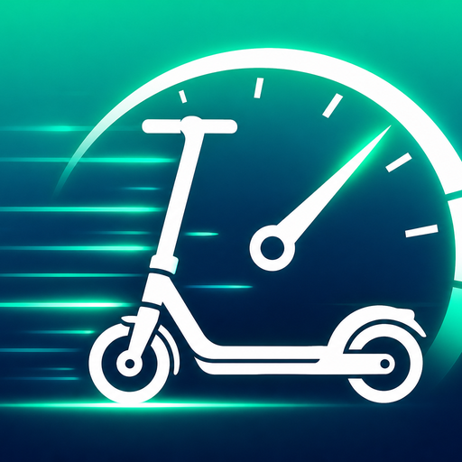

Contrôle ta trottinette Ninebot / Xiaomi en Bluetooth
Sur iPhone, ouvre cette page dans Bluefy (navigateur gratuit sur l'App Store) : Safari ne gère pas le Bluetooth.
Trottinette allumée et proche. Sélectionne-la dans la liste qui apparaît.